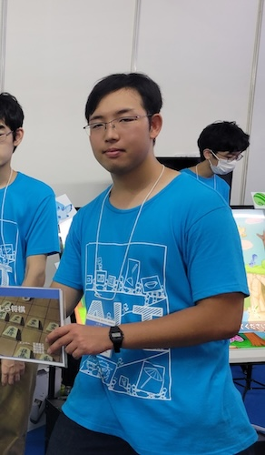

MyProfile

Picture

Leisure
- ゲーム
- 読書
- サイクリング
- ネットサーフィン
Detail
| 氏名 | 横田峻祐(Yokota_Syunsuke) |
|---|---|
| 住所 | 愛知県長久手市在住 |
| 生年 | 2004/05/24 |
| 所属 | 愛知工業大学 情報学部 メディア情報専攻 |

| 氏名 | 横田峻祐(Yokota_Syunsuke) |
|---|---|
| 住所 | 愛知県長久手市在住 |
| 生年 | 2004/05/24 |
| 所属 | 愛知工業大学 情報学部 メディア情報専攻 |